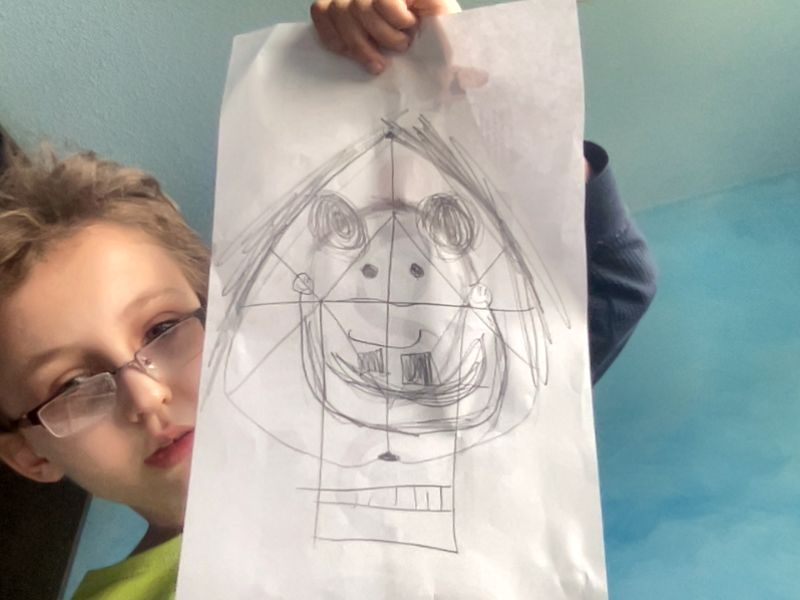

One of my favorite things to do
is math. I wouldn't look into
the math book. I would just
make up my own numbers and
think of a math problem.
Drawing
Another thing that I like to do is draw.
Maybe being an artist will be my career.
I'm personally a fan of Jackson Pollock
The Long S
Another one of my interests is old language.
I've heard of this old letter that looks like this:ſ(a funky f)
The modern S existed back in the
very old days too. It was alternative called
the long s was used as often
as the normal s.
Works For My Favorite Stuff.
Finding Mistakes In Math:
Finding the area of a circle. Radius: 5 units.
3.14
x 25
_____
15.70
+62.80
_____
77.50
Oh No! I forgot to carry the one during addition!
The real answer is 78.50.
That's a real mistake I once did.
Abstract Art Piece Of Work:

The idea is that a lot of faces are similar to each other.